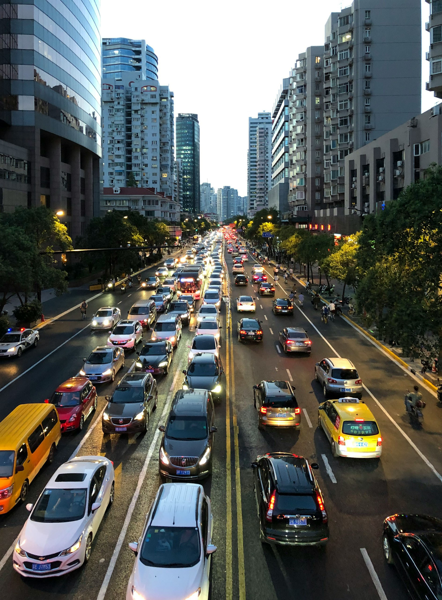
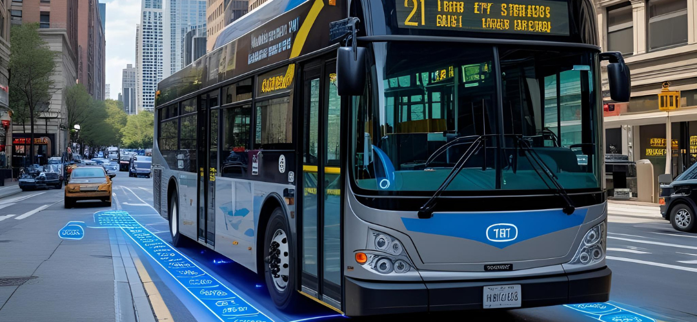
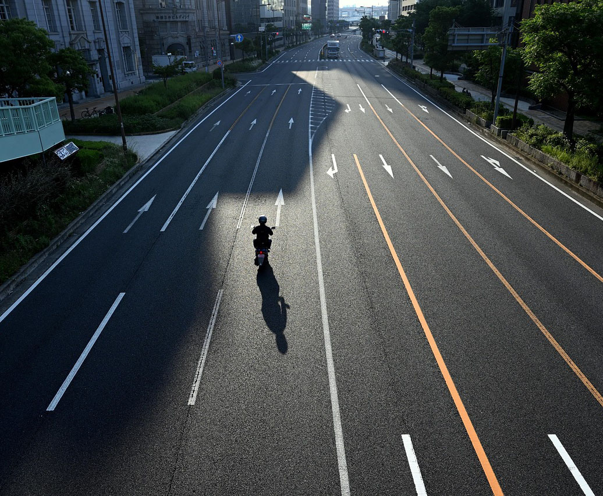
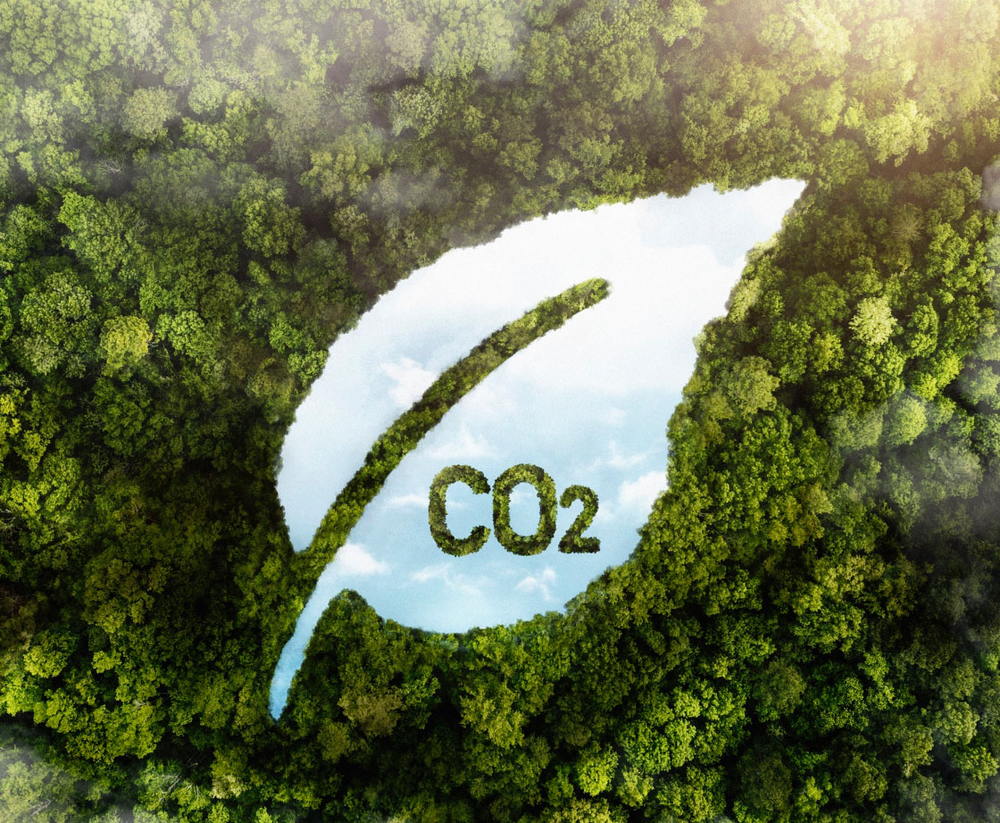
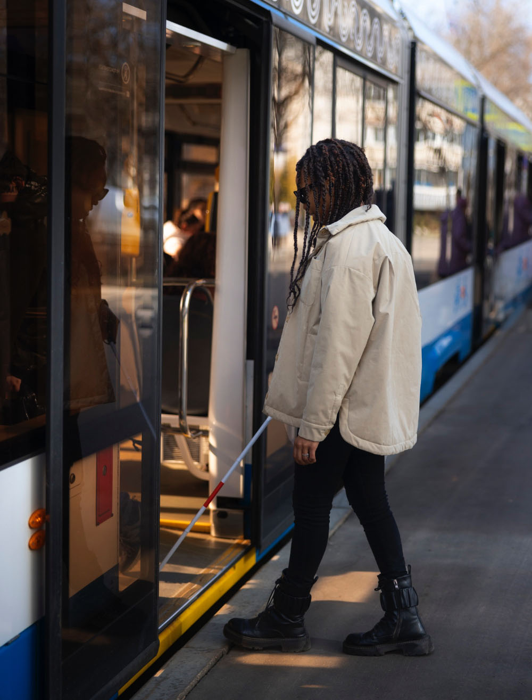
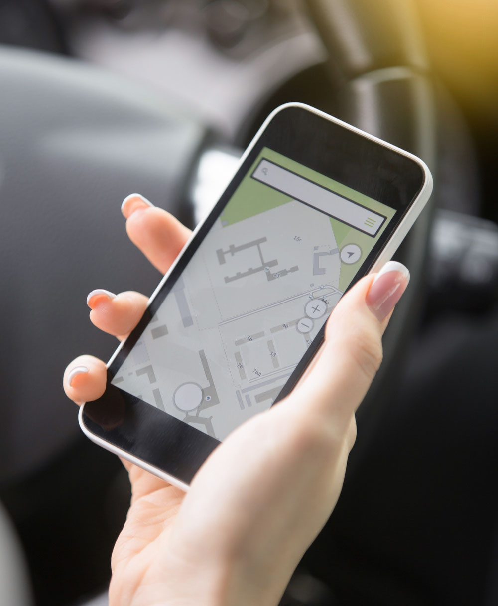
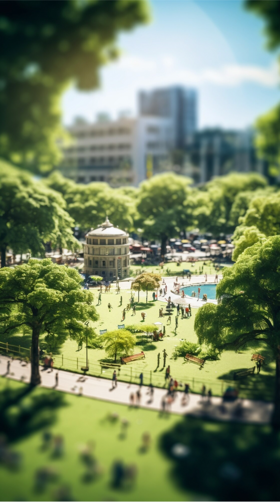

Modern Problems

... Require Modern Solutions

Improving the Quality of Life with Smart Cities
The future of city centers is smart. With the use of innovative technology, Smart Cities will enhance the quality of life by mitigating traffic by collecting data with sensors and utilizing it in various useful ways.

Traffic lights react in real time to lessen congestions
+ Less Traffic

Controlled traffic leads to less CO2 emissions.
+ Cleaner Air

Live GPS data offers accurate public transport arrival times
+ Reliable Transport

Apps help to find empty parking spaces
+ Assisted Parking

Data shows where public spaces can be created
+ Public Spaces
Emergeny vehicles reach thoir destination faster with priority routes
+ Improved Safety
Image Sources
Lee, D. (2020), Cars on road during daytime [Online]. Available at: https://unsplash.com/photos/cars-on-road-during-daytime-C031beKcwdQ (Accessed: 04.08.2025)
Freepik (2025), Natural disaster landscape [Online]. Available at: https://www.freepik.com/free-ai-image/natural-disaster-landscape_396737840.htm#fromView=search&page=1&position=10&uuid=bc936039-8d8b-4daa-b73b-430f8fc4984d&query=emissions+city (Accessed: 11.08.2025)
TheDigitalArtist (2023), Ai Generated, Business, Office royalty-free stock illustration. Free for use & download. [Online]. Available at:
https://pixabay.com/illustrations/ai-generated-business-office-8165293/ (Accessed: 04.08.2025)
DC Studio (2025), Empty business corporation workstations in a modern boardroom [Online]. Available at: https://www.freepik.com/free-photo/empty-business-corporation-workstations-modern-boardroom_230316596.htm#fromView=search&page=1&position=3&uuid=afa7f609-f1d6-4fe0-9b82-b61840ed3c47&query=time+data (Accessed: 11.08.2025)
Yamabon (2021), Road, City, Motorcycle image. Free for use. [Online]. Available at: https://pixabay.com/photos/road-city-motorcycle-morning-6281973/ (Accessed: 11.08.2025)
Freepik (2025), View of green forest trees with co2 [Online]. Available at: https://www.freepik.com/free-photo/view-green-forest-trees-with-co2_31481258.htm#fromView=search&page=1&position=0&uuid=0f61ec1f-6035-4d71-af25-5a56fe6f1124&query=less+emissions (Accessed: 13.08.2025)
Freepik (2025), Side view woman getting in bus [Online]. Available at: https://www.freepik.com/free-photo/side-view-woman-getting-bus_27602146.htm#fromView=search&page=2&position=15&uuid=6750f01b-f7ab-4126-a0cc-b1d79d3cd724&query=bus+person (Accessed: 12.08.2025)
Yanalya (2025), Closeup of female hand holding smart phone using navigation syst [Online]. Available at: https://www.freepik.com/free-photo/closeup-female-hand-holding-smart-phone-using-navigation-syst_1281706.htm#fromView=search&page=1&position=8&uuid=abc33d14-3880-414e-8427-2722350baac1&query=parking+app (Accessed: 13.08.2025)
Freepik (2025), Rendering of a miniature world [Online], Available at: https://www.freepik.com/free-ai-image/rendering-miniature-world_72378309.htm#fromView=search&page=1&position=13&uuid=b4522db6-35d6-4c19-bb75-803a60129697&query=city+park (Accessed: 12.08.2025)
Freepik (2025), Female firefighter at station equipped with suit and safety helmet [Online]. Available at: https://www.freepik.com/free-photo/female-firefighter-station-equipped-with-suit-safety-helmet_21076127.htm#fromView=search&page=1&position=22&uuid=798ebfa9-1290-4ae6-9fdd-8c64985558cd&query=Australia+fire+fighters+vehicle (Accessed: 13.08.2025)
Created by Annika Kristin Kaul (Student Number: 1196068) for DES222 Task 1.